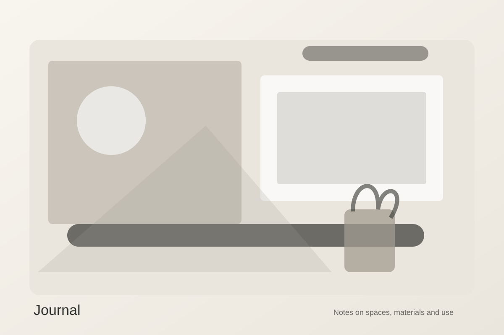

Journal
Notes on spaces, materials and use.
Short essays from the studio on practical design decisions and the ideas behind them.

Journal · 6 min read
Material Honesty: Designing for Patina
Why surfaces that change with use often create richer interiors than finishes designed to remain untouched.
Read article →Journal · 6 min read
Five Layers of Architectural Lighting
A practical framework for combining daylight, ambient, task, accent and decorative light.
Read article →Journal · 6 min read
Making Small Spaces Feel Generous
How sightlines, storage depth and furniture scale can improve compact residential interiors.
Read article →Journal · 6 min read
Designing Hospitality for Memory
What makes a guest remember a room long after the check-out date.
Read article →